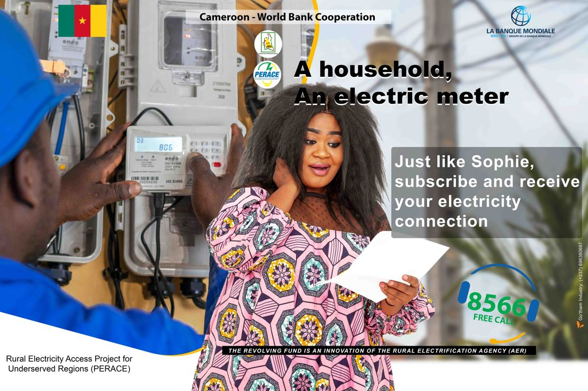
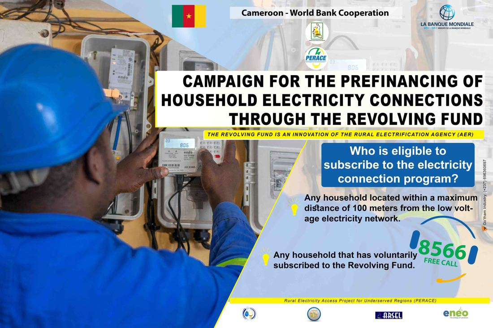
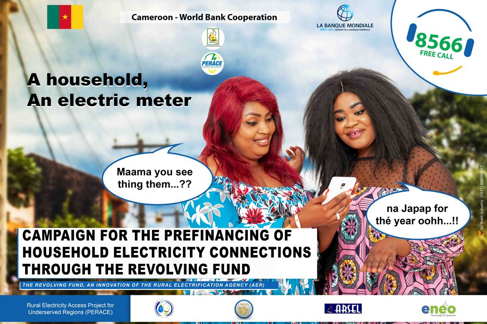
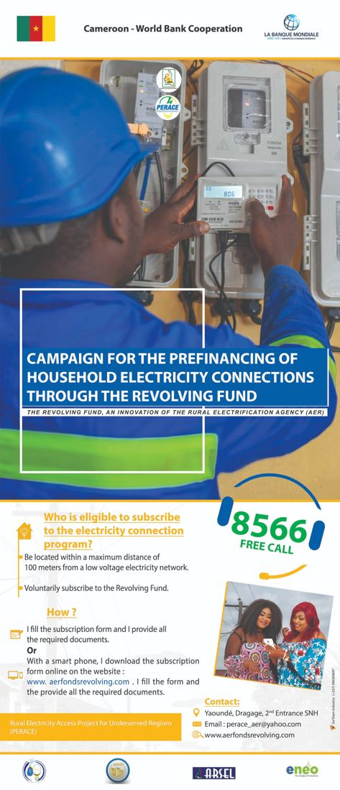

Campagne 01 · Énergie & accès à l'électricitéCampaign 01 · Energy & electricity access
Campagne de sensibilisation pour raccorder deux millions de personnes à l'électricité au CamerounAwareness campaign to provide electricity to two million people in Cameroon
Une campagne nationale pour gagner la confiance des ménages et les faire adhérer à un programme de raccordement de deux millions de personnes à l'électricité.
A nationwide campaign to win the trust of households and bring them on board with a programme connecting two million people to electricity.
- 01
Défi de communicationCommunication challenge
Convaincre les ménages d'adhérer à l'initiative dans un contexte de méfiance généralisée envers les programmes publics de développement et de perte de confiance envers les autorités.
Persuading households to sign up to the initiative at a time of widespread mistrust of government-led development programmes and a loss of confidence in the authorities.
- 02
ObjectifObjective
Donner accès à l'électricité à deux millions de personnes au Cameroun.
Provide electricity to two million people in Cameroon.
- 03
Publics ciblesTarget audiences
Ménages des zones rurales, semi-urbaines et urbaines.
Households in rural, semi-urban and urban areas.
- 04
Mon rôleMy role
Senior Campaign Manager : pilotage de bout en bout (objectif stratégique → public → récit → concept créatif → canaux → mesure), direction d'équipes créatives pluridisciplinaires (jusqu'à 40+ professionnels).
Senior Campaign Manager: end-to-end lead (strategic objective → audience → narrative → creative concept → channels → measurement), directing multidisciplinary creative teams (up to 40+ professionals).
- 05
Approche stratégiqueStrategic approach
Une phase pilote centrée sur le genre, puis un déploiement à grande échelle, guidé par l'écoute sociale (Meltwater, Talkwalker) plutôt que par les seuls événements.
A gender-focused pilot phase followed by large-scale roll-out, driven by social listening (Meltwater, Talkwalker) rather than events alone.
- 06
Concept créatifCreative concept
Une promesse simple : « Un ménage, un compteur ». Rendre l'électricité concrète et accessible, avec les femmes comme voix principales. Un message qui circule comme une nouvelle de quartier, en langage courant et avec humour (« C'est le JAPAP de l'année ! »). La transparence d'abord : qui finance, comment les remboursements sont suivis, qui contrôle les travaux, où se plaindre. Chaque message se termine par le même appel : le numéro vert 8566 ou l'inscription en ligne.
A simple promise: “A household, an electric meter.” Making electricity feel concrete and within reach, with women as the main voice. A message designed to spread like neighbourhood news, in everyday language and with humour (“C'est le JAPAP de l'année !”). Transparency first: who backs the programme, how repayments are tracked, who checks the work, where to complain. Every message ended with the same call to action: the free number 8566 or online registration.
- 07
CanauxChannels
- 08
DiffusionDissemination
Démarrage dans les villes pilotes, puis extension aux 687 localités du PERACE. Les mêmes contenus circulaient sur Facebook, WhatsApp, à la télévision et à la radio, tandis que les équipes terrain faisaient du porte-à-porte. Les ménages s'inscrivaient en ligne ou appelaient le 8566 pour leurs questions et plaintes.
Starting in the pilot cities, then extended to the 687 PERACE localities. The same content ran on Facebook, WhatsApp, television and radio, while field teams went door to door. Households registered online or called 8566 with questions or complaints.



